内测版 1 · 2026 年 11 月
先完成首次上手，再按需使用语音、模拟和复盘。截图使用示例资料和演示回答，图中耗时不代表实际服务速度；回答及自动核查需要你确认，不能当作个人事实。真实面试或考试前，请确认对方允许使用辅助工具。
首次上手
01 下载并安装
从官网“下载”选择 Windows 64 位，或与你的 Mac 芯片匹配的版本。下载尚未开放时按钮显示“即将开放”，请等待维护者通知。
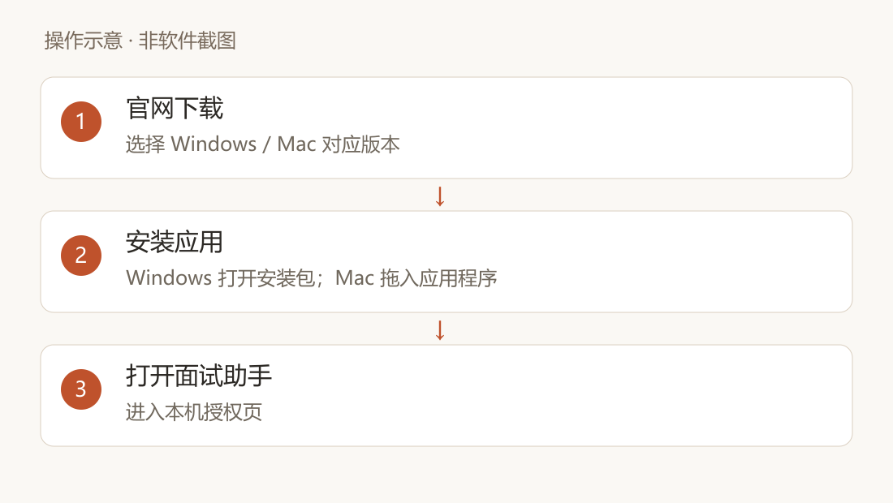
Windows 未签名安装包可能触发系统提示；先确认官网来源，不确定时停止并联系维护者。Mac 需要 macOS 14.2+；首次放行见文末说明。
02 领取并导入本机授权
首次打开，复制授权页的设备码，按官网“获取授权”联系维护者。收到本机
.jyflicense
文件后，阅读并勾选条款，点击“同意条款并启用”，选择授权文件；成功后进入主界面。
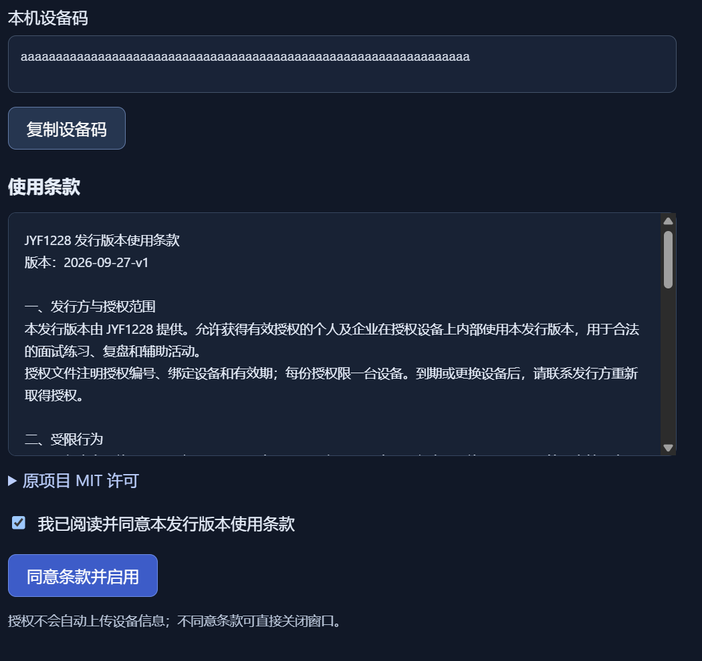
授权不需要联网激活。内测授权通常每次 7 天，到期用同一设备码续期；不要共享授权文件。
03 路径 A：使用已有体验额度
点右上角齿轮打开“设置”，在“反馈与诊断”看到体验额度提示即可；在“回答”保持 OpenAI 和可用模型。不必先开户充值，可直接继续第 06 步。
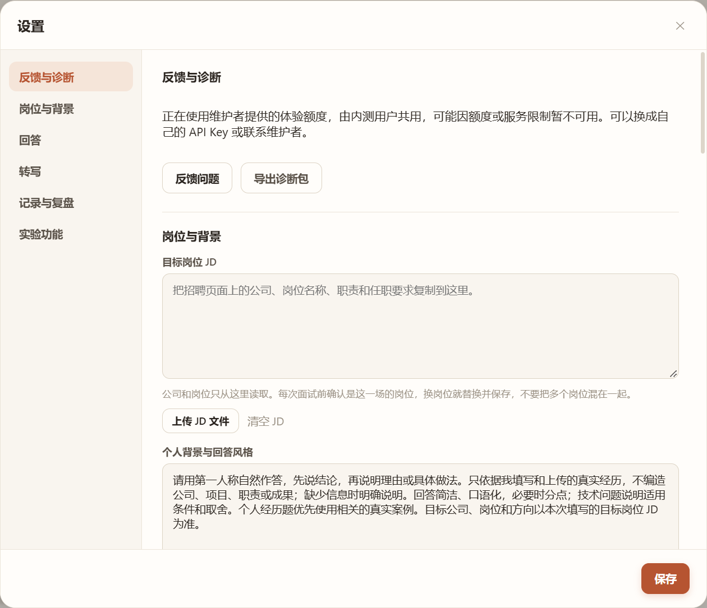
额度由内测用户共用，可能暂停；没有提示时联系维护者确认授权。相关内容经维护者的 OpenAI 账户发送给 OpenAI。
04 路径 B：填写自己的 Key
在“设置 → 回答”选服务与模型，填写对应 Key，再点底部“保存”。OpenAI 回答和转写共用这里的 OpenAI Key；其他回答服务使用各自 Key。
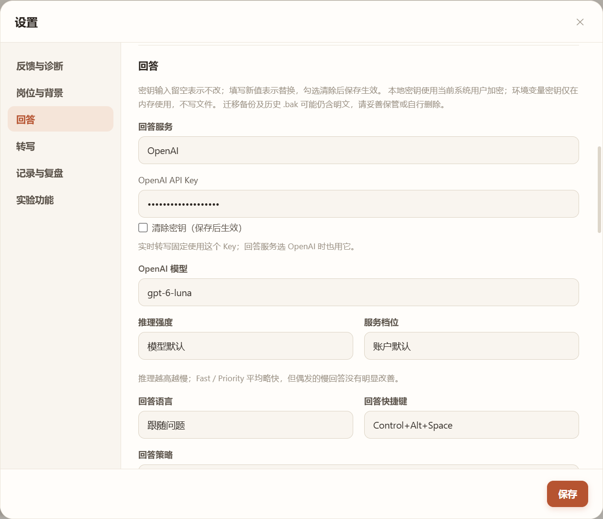
图中 Key 仅作示例，请填写自己的 Key。自己的 OpenAI Key 优先于体验额度；开户步骤见文末官方链接。
05 重开设置，确认已配置
再次打开“设置 → 回答”。输入框清空且提示“已配置”及末尾字符，表示本机保存成功；这不代表网络、余额和模型权限已验证。
留空保存表示保留旧值；输入新值表示替换；勾选“清除密钥”再保存才会移除。
06 填写并保存岗位 JD
在“岗位与背景”填本场 JD、真实背景和表达偏好，点“保存”。重新打开确认 JD 仍在；换岗位时替换旧 JD。
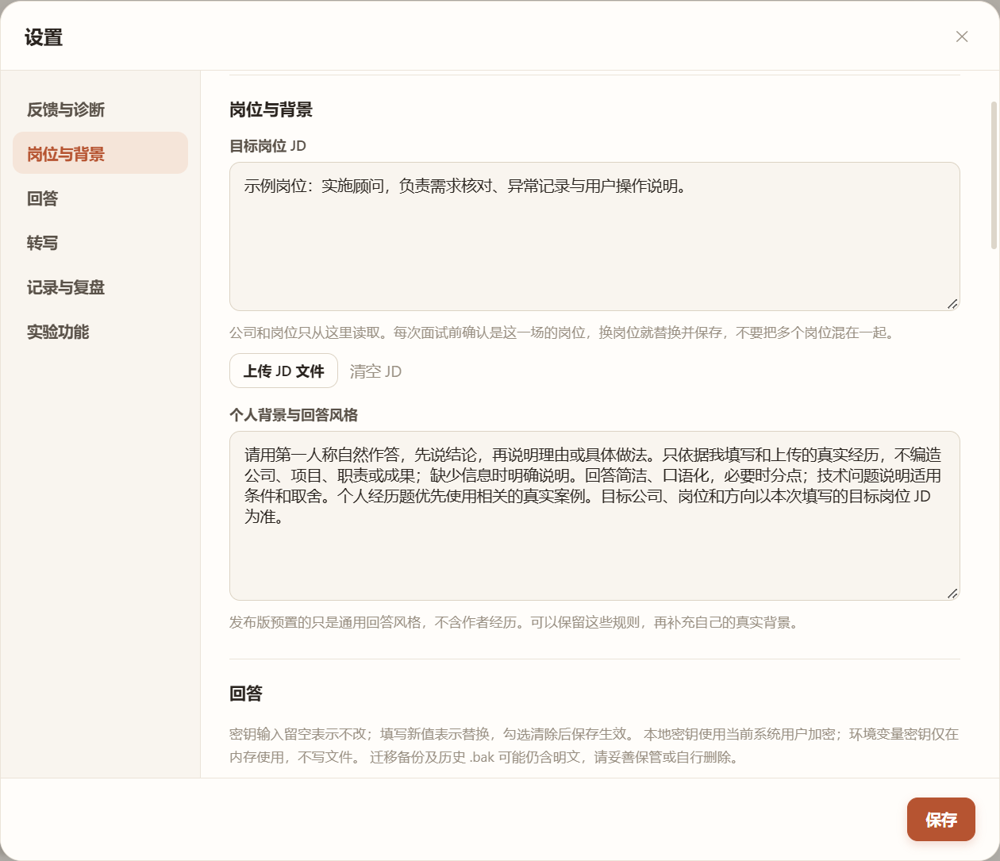
保存 JD 可能触发术语生成、资料预热等服务请求。不要把希望获得的经历写成已发生的事实。
07 找到上传与粘贴入口
主界面“个人面试资料”可点“上传”；要直接添加文本时点“粘贴文本”。先使用不含隐私的简单示例。
08 填写并添加文本资料
填写名称和正文，再点“Add to 个人面试资料”。添加成功后可点“查看资料”。
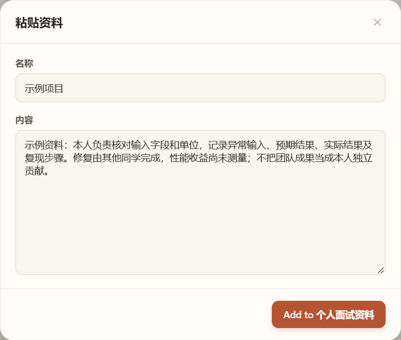
支持可复制文字的 PDF、DOCX、TXT 等；扫描件不会自动 OCR。粘贴前先核对原文，文件解析可能不完整。
09 查看导入状态
点“查看资料”，核对名称、字符数、加载方式及资料类型。列表没有原始正文预览，字符数也不能证明解析完整。
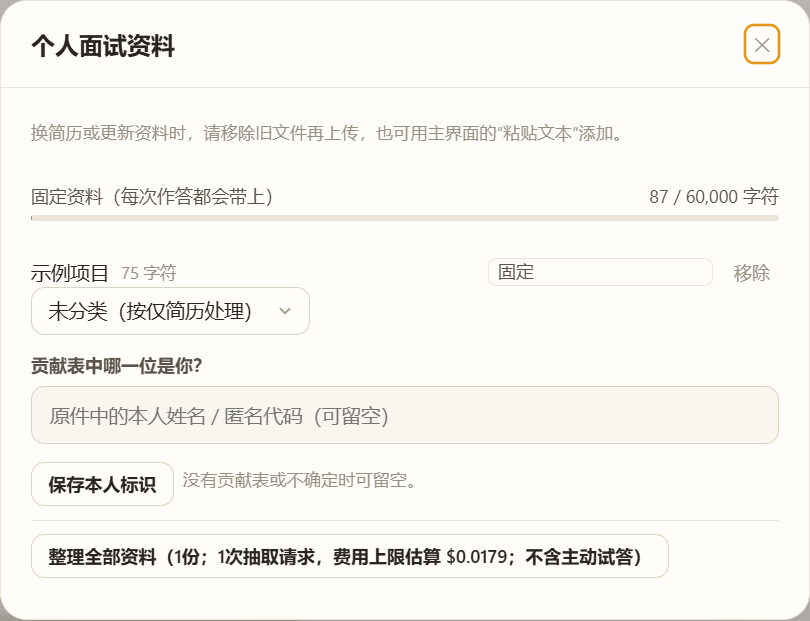
贡献表的本人姓名或代码不确定时留空；需要经历卡时再按下面两步整理。
10 整理前核对范围与费用
点“整理全部资料”，先看资料范围、请求数和估算。需要确认时点“确认整理”；单段且费用可估算时可能直接开始，点击前就要看清按钮上的费用。
不想继续时点“取消”。失败会停止后续段，不自动重试；费用未知时先核对服务商费率。
11 查看整理结果
完成后查看“已生效整理稿”和薄弱点；原件保留供按题检索。核对本人分工、否定与数字，不把模型补写变成个人事实。
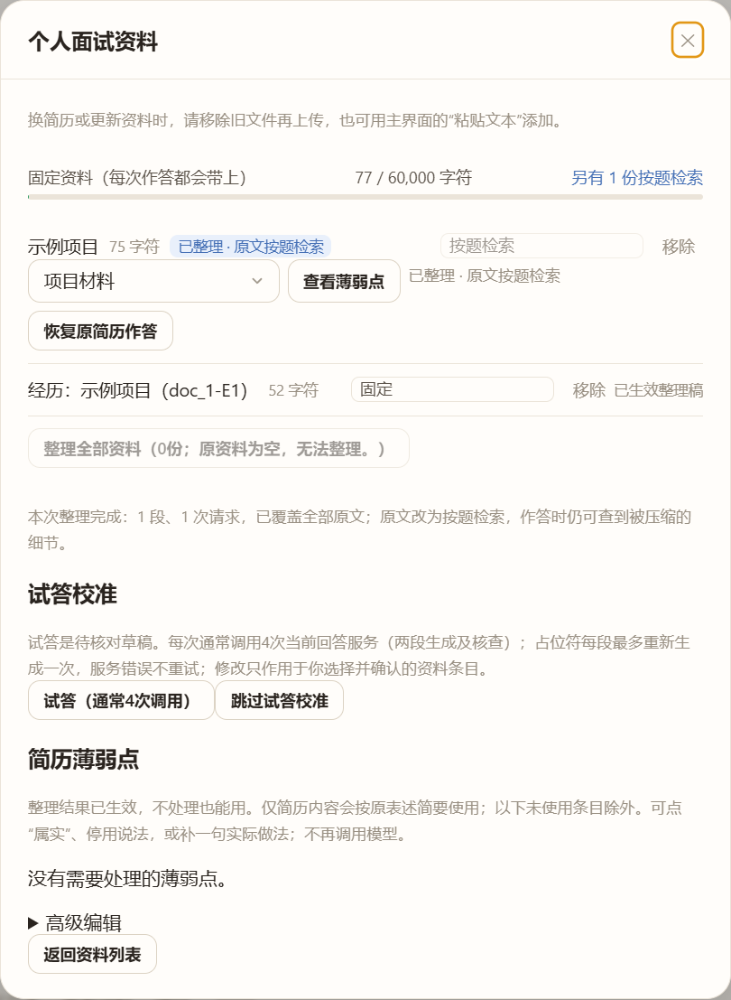
试答会另外产生请求和费用，不需要时可跳过。整理不能补造原文没有的事实。
12 输入问题，生成一次参考回答
在“当前问题”输入题目，点“生成回答”；右侧出现正文后，核对引用的经历、分工和数字。第一次手动提问无需开启监听。
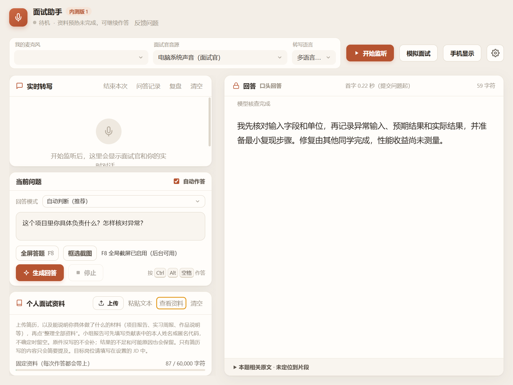
等待过久可点“停止”。失败或重试仍可能计费；核查完成也不代表事实已经人工确认。
按需使用
13 选择音源，再开始监听
主界面顶部选择“我的麦克风”和“面试官音源”，确认转写语言，再点“开始监听”。看到转写文字后检查题目是否完整；不需要自动回答时取消“自动作答”。
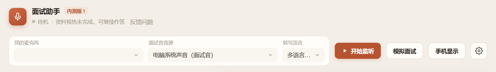
转写使用 OpenAI，需有效 Key、额度、网络及系统权限；停止监听后不继续主动采集两路音频。
14 模拟面试：选择“我来答”
点“模拟面试”，选择“我来答”，填写本场 JD、侧重和题数。检查朗读、自动下一题选项及费用后，再点“确认费用并开始”。
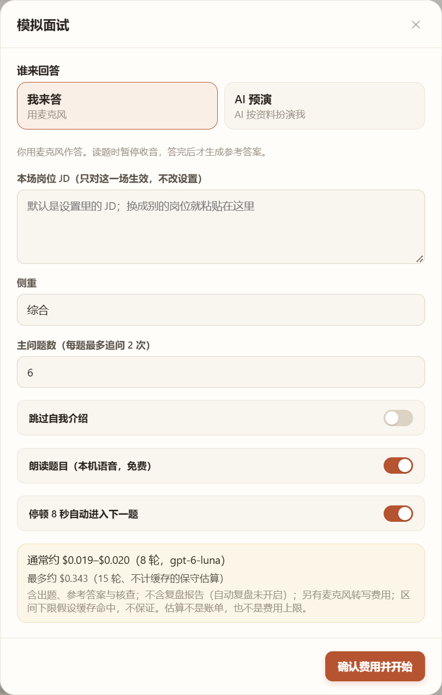
开始后用麦克风作答，可按页面暂停、跳题或结束。思考时间较长时关闭自动下一题；参考答案不能替换你的真实发言。
15 AI 预演：由 AI 按资料代答
在同一入口选择“AI 预演”，设置范围并检查整场估算，再确认开始。此模式不用麦克风，出题、代答、核查和报告均可能收费。
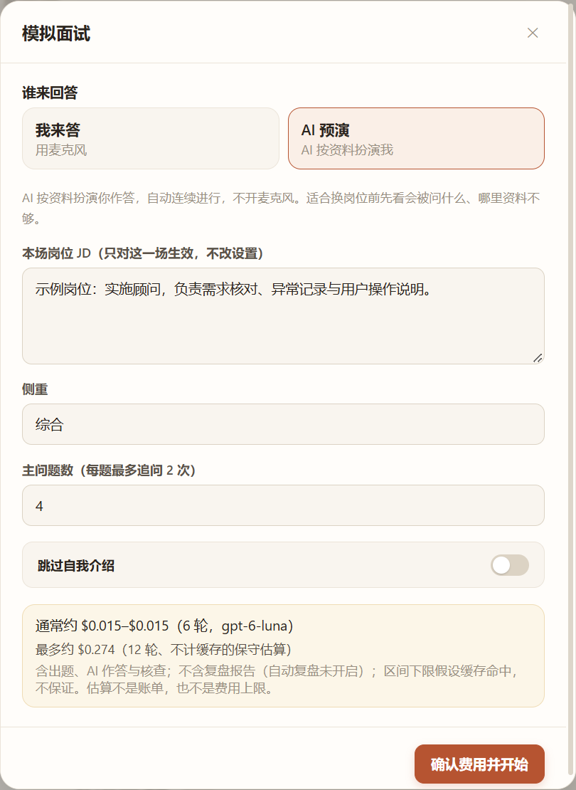
可随时停止；它展示资料可能支持的回答，不代表你本人的表达能力。
16 看题目和进度，结束后复盘
运行时查看当前题目、回答与进度，按页面按钮结束或等待完成。结束后到“复盘”选择对应场次，区分“我来答”与“AI 预演”。
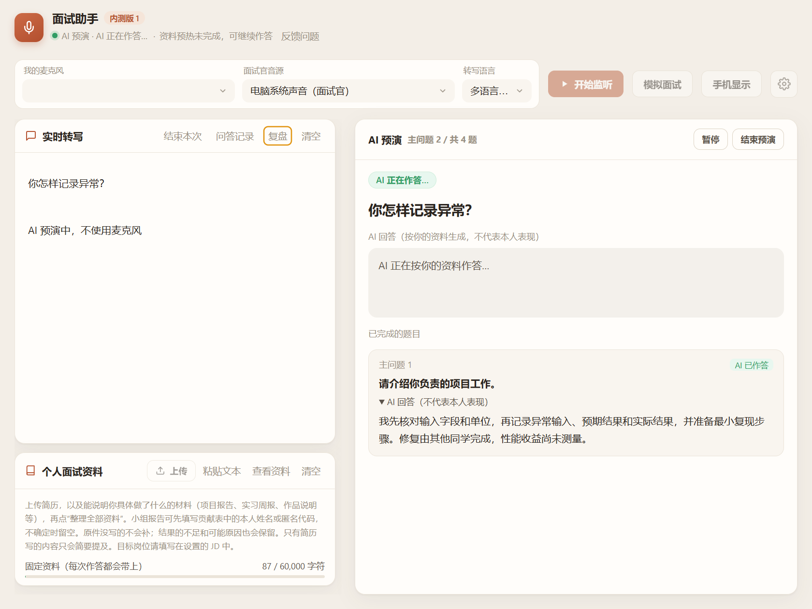
首字时间是等待首段可显示正文的时间，不是完整回答耗时或实际口述时长。
17 先开启问答保存询问
需要保存普通问答时，打开“设置 → 记录与复盘”，开启“结束或退出时是否保存问答”，再点“保存”。公开版默认关闭。
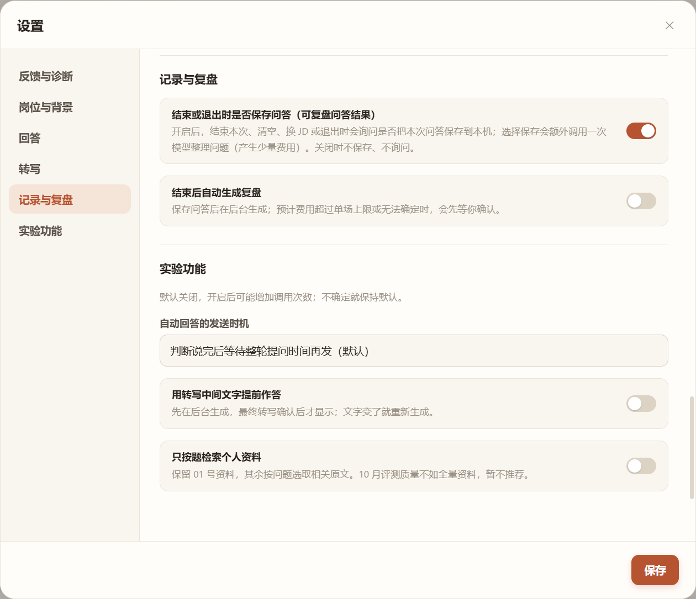
“结束后自动生成复盘”是另一个选项，会新增调用；不需要时保持关闭。
18 结束本次，选择保存
有已完成问答时点主界面“结束本次”，在提示里选“保存问答”。选择返回可继续；保存失败时本次内存问答保留，先处理错误再退出。
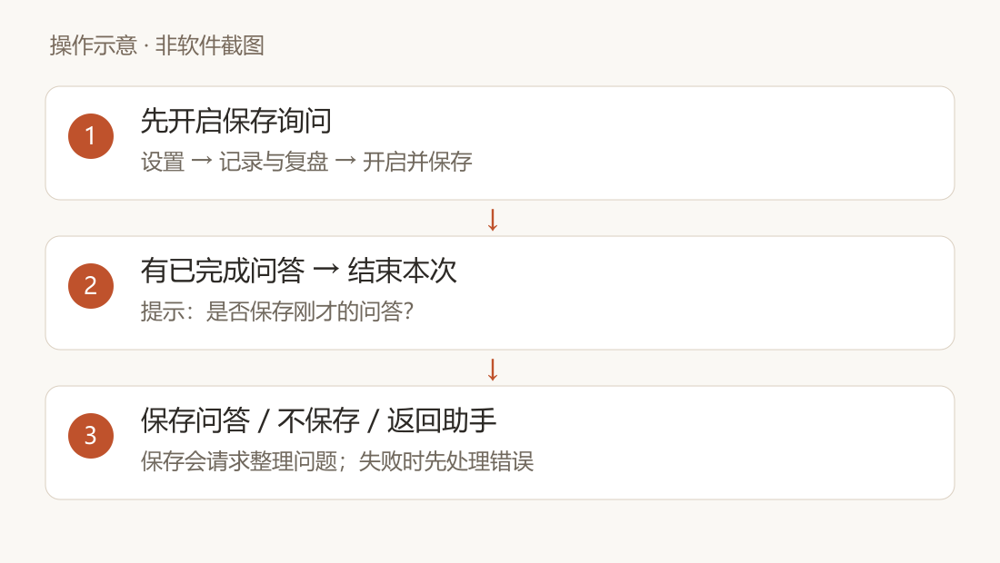
保存会额外调用模型整理问题，可能收费。没有已完成问答时不会出现相同保存选择；没有绕过设置开关的独立手动保存按钮。
19 找到问答记录文件
主界面“实时转写”标题栏点“问答记录”，打开本机记录文件夹。分享文件前检查姓名、联系方式、项目原文及题图等敏感内容。
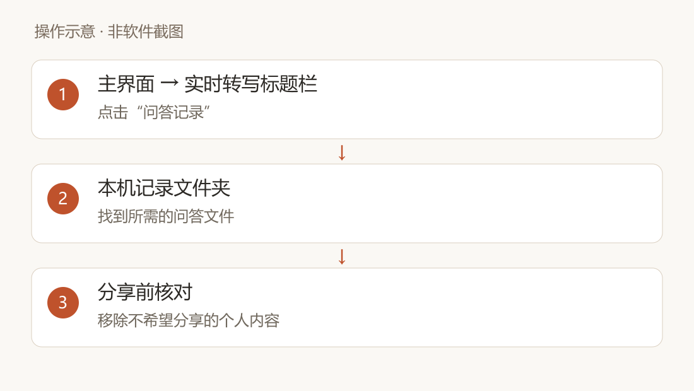
问答、场次归档与原始音频是不同记录；保存问答不代表录音。删除前自行备份需要保留的内容。
20 打开场次复盘
在同一标题栏点“复盘”，选择已保存场次，查看问题、回答和报告。没有场次时按页面提示先结束并保存问答。
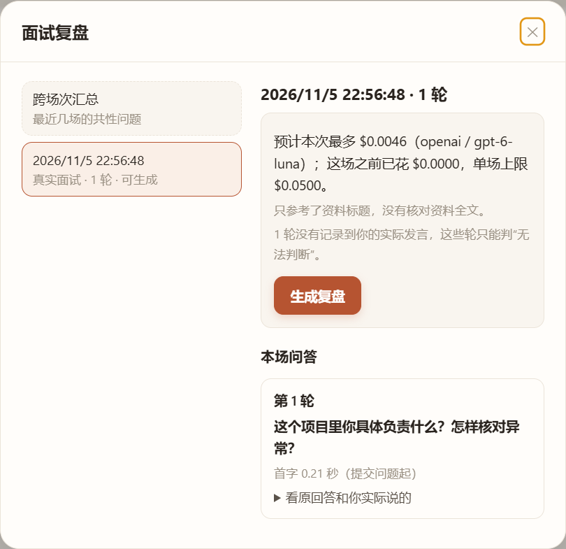
报告是模型建议；本人转写、AI 代答和参考答案要分开看。生成或重新生成报告可能收费。
21 截图题：只选需要的题干
“当前问题”下方可点“框选截图”，或在问题框粘贴已裁好的题图。F8 / “全屏答题”会截鼠标所在的整块屏幕，先移走其他敏感窗口。
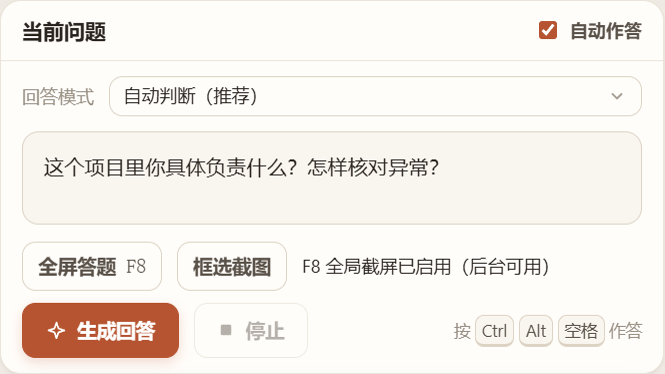
截图会发送给支持图片的回答模型，不会自动滚动补题。快捷键冲突时用界面按钮。
22 手机只读显示
手机和电脑先连接同一个 Wi-Fi。点“手机显示”，优先选 WLAN 对应的 IPv4 地址，再点“开启手机显示”并扫码；换网络后重新开启、扫码。
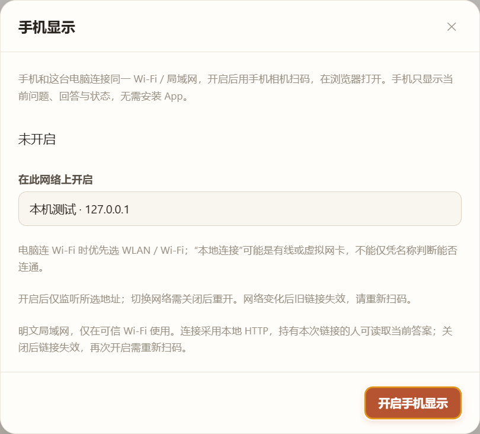
只在可信 Wi-Fi 使用：明文局域网传输，持有二维码或链接的人可读当前问答。手机不能配置 Key、管理资料或发起回答。“本地连接”可能是有线或虚拟网卡，不保证手机可达；电脑走网线、手机连同一路由器 Wi-Fi 时也可能可用，仍受隔离与防火墙影响。
23 反馈问题
“设置 → 反馈与诊断”点“反馈问题”，把复制的诊断信息和复现步骤发到内测群。授权及入群联系方式见官网“获取授权”。
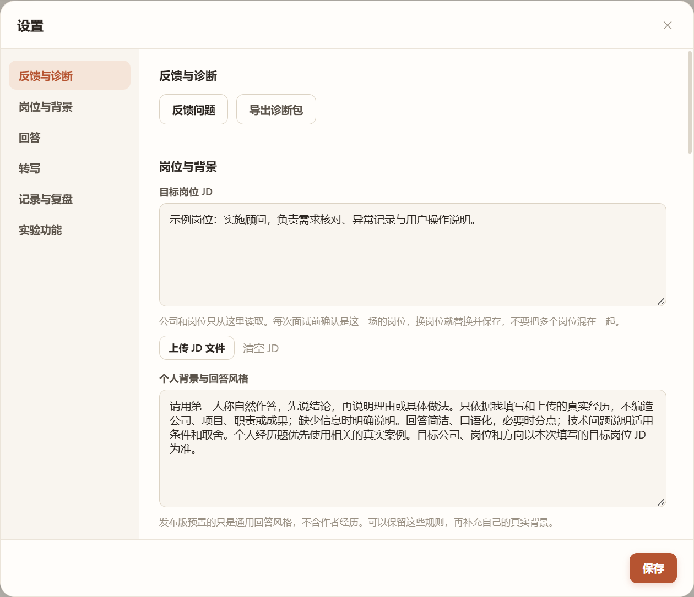
不要发送 Key、授权文件、简历全文或真实面试录音。复制诊断不会自动发送给维护者。
24 确认后导出诊断包
需要更多信息时点“导出诊断包”，先阅读包含内容，再确认并选择本地保存位置。导出后自行核对，再决定是否分享。
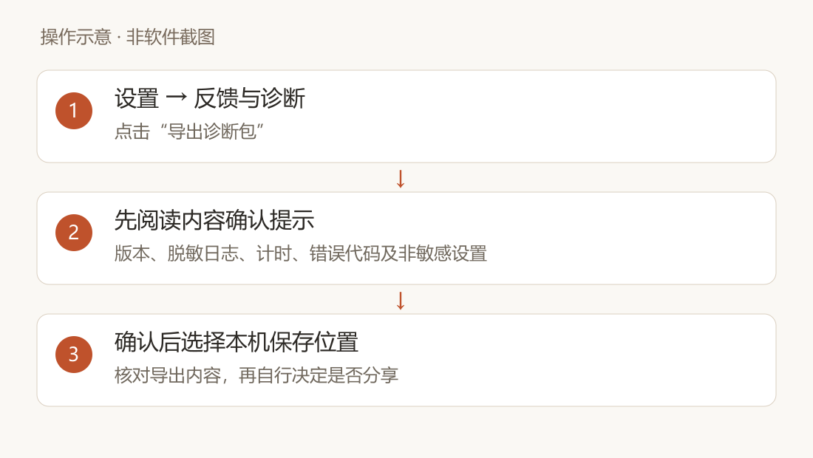
诊断包不自动上传；Key 只标已配置/未配置，不包含资料、问答、转写或设备码。
25 隐藏或真正退出
点窗口关闭按钮。选择“隐藏到托盘并继续运行”会留在后台；选择“退出程序”才真正结束。取消退出后，需要时手动重新监听。
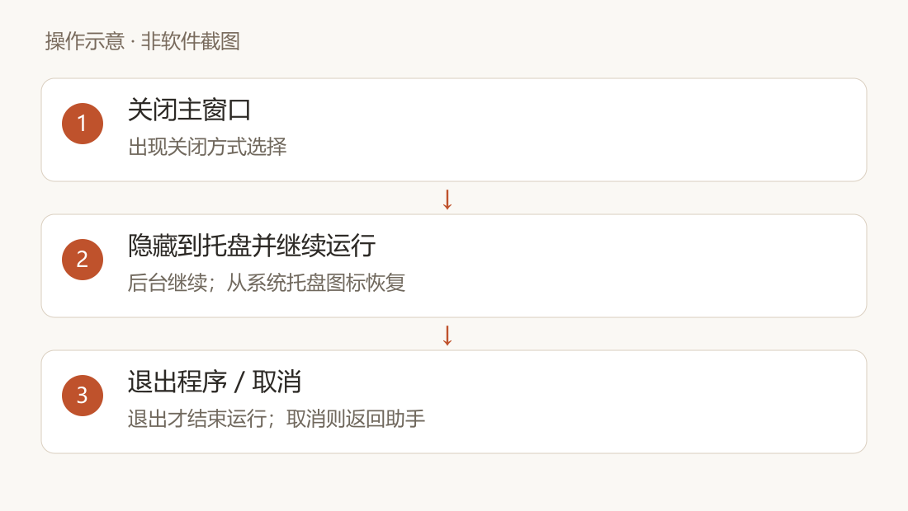
隐藏后可从系统托盘图标恢复。更新代码或安装版本后需真正退出再打开，仅隐藏不会加载更新。
怎么获取 OpenAI API Key
已有体验额度可跳过开户。自备 Key 时，按 官方入门说明 在本人有权使用的账户/项目创建 Key，粘贴到软件“设置 → 回答”，不要发群或截图分享。
API 计费独立于 ChatGPT 订阅。开户、支付及自动充值由你本人确认；不需要为了体验额度先开户。
有管理权限时，可按 官方消费上限说明 在组织或项目配置月消费上限和 Enforce a hard limit。提醒不阻断请求；强制上限传播可能延迟、略有超额，按实际账户可用选项设置。
费用、隐私与使用限制
- 费用：回答、核查、预热、整理、试答、转写、模拟、预演和复盘都可能收费。先看模型、范围和估算；超时或停止不证明未计费，账单以服务商为准。体验额度共用，可能因额度或服务限制暂停。
- 地区：OpenAI API 支持资格以 官方地区清单 为准，目前不支持中国大陆和香港；网络连通不代表使用资格。可选择其他回答服务，实时转写仍使用 OpenAI。
- 发送内容：相关问题、JD、背景、资料片段/整理原文、题图及相应场次内容会发到所选回答服务；监听音频发到 OpenAI。Ollama 只有配置在本机时回答链路才在本机，其他云功能不会随之本地化。
- 本机数据：设置、资料及记录留在本机，资料和问答本身不加密；系统支持时 Key 按当前用户加密（Mac 为钥匙串）；加密不可用时可能明文保存，按软件提示处理。授权失效或卸载不等于删除记录，也无法撤回已发给服务商的内容。
- 资料依据：只导入真实、有权发送的材料。分工、否定和数字要核对；资料缺失时不能由模型常识补成个人经历。仅简历支持、冲突或未知项按界面提示处理；整理失败不自动重试。
- 常见错误：上传读不到文字时改用可复制文本；Key/额度错误先检查对应服务或联系维护者；超时先看网络与模型权限。避免连续重复付费操作，反馈只分享脱敏信息。
Mac 测试版与授权说明
安装操作见第 01 步示意。Apple 芯片选 arm64，Intel 选 x64；需要 macOS 14.2+。遇首次阻止打开，按系统“隐私与安全性”的官方流程确认来源后处理，不关闭整机安全检查；公司管理设备可能无法放行。
授权使用当前 Mac 显示的设备码，Windows 文件不能跨平台复用。麦克风、屏幕及电脑声音权限按系统提示由本人确认；修改后退出重开。默认作答键 Cmd+Option+Space，F8 可能需配合 Fn；旧自定义键保持不变。
Mac 的会议软件声音、中文朗读、14.2 实机、多屏和全屏会议仍有未验证项。不要把 Windows 图当成 Mac 实测截图；先核对自己需要的功能。
软件会读取官网的签名停用和版本信息；联网失败不新增停用，也不自动下载安装。有效停用通知或最低版本要求会限制新回答，已有记录可按流程处理。换设备或授权到期请联系维护者，不要删除资料尝试修复。
本发行版由 JY-Feng1228 维护，基于 MIT 许可的 ericwang915/interview-copilot 修改；随包许可和授权条款为准。